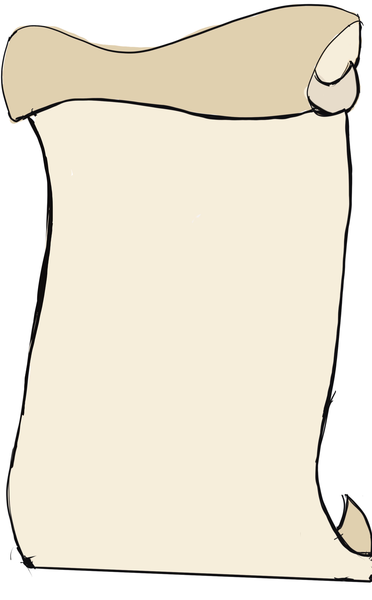
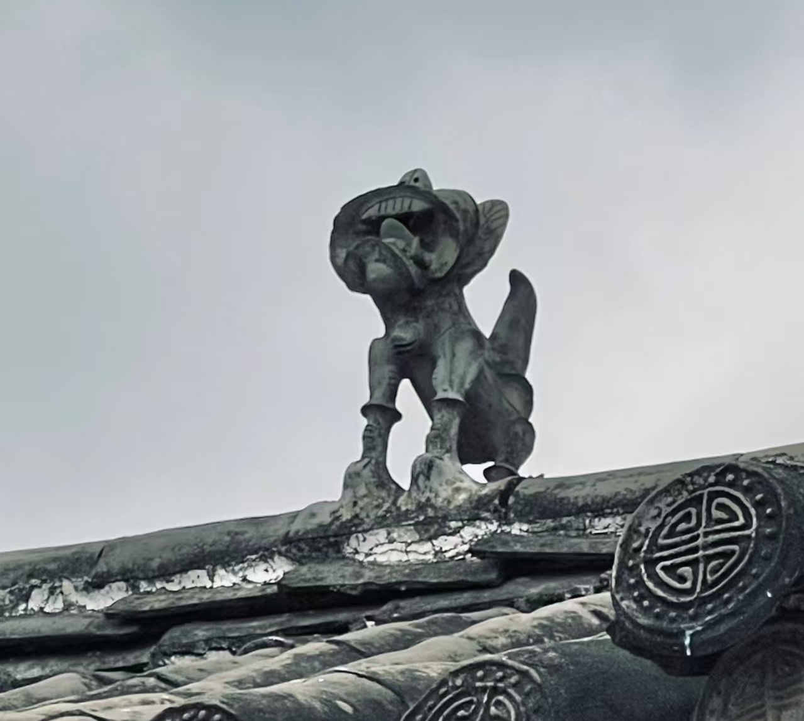
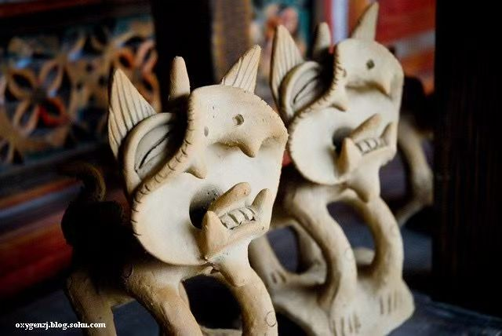
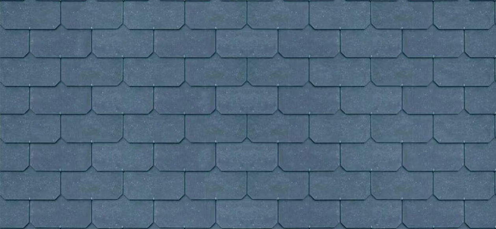

瓦猫溯源

清代滇西民居屋脊瓦猫（图源：云南民俗博物馆）
一、瓦猫的起源
瓦猫，又称"镇脊虎"，是云南特有的民俗神兽，最早可追溯至明代洪武年间。明初汉族大规模迁入云南，将中原"镇宅瑞兽"文化与云南本土巫傩文化融合，以陶土烧制猫形图腾，置于民居屋脊正中，寓意吞邪纳福、镇宅护院。
早期瓦猫多为青灰陶胎，造型粗犷，张口露齿，意在"吞噬一切不祥"，是西南边疆民众对抗自然灾异、邪祟的精神寄托。
查看云南民俗博物馆官网
不同地域的瓦猫形制（左：大理 右：建水）
二、地域与形制演变
明清时期，瓦猫在云南各地形成不同风格：
- 大理瓦猫：身形瘦长，双耳直立，多饰以彩绘
- 建水瓦猫：短粗敦实，腹部浑圆，象征"聚财"
- 腾冲瓦猫：融入傣族图腾元素，添有鳞甲纹路
至民国时期，瓦猫从"镇宅神器"逐渐演变为民俗装饰，造型趋于温和，部分还会在口中嵌琉璃珠，寓意"明珠镇宅"。
瓦猫古法烧制工艺实拍

现代非遗匠人制作瓦猫
三、当代传承
如今，瓦猫被列入云南非物质文化遗产，大理、建水等地的匠人仍保留古法烧制工艺。除传统屋脊摆件外，瓦猫还衍生出文创产品、茶具、饰品等形式，成为云南民俗文化的标志性符号。
其"镇邪纳福"的核心寓意未变，仍是西南民众对平安、富足生活的美好祈愿。
瓦猫文化调研问卷
